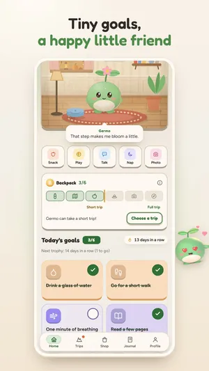
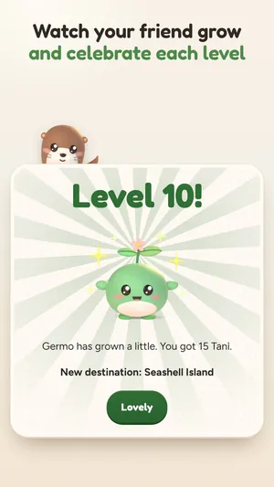
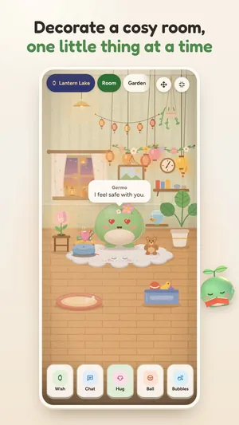
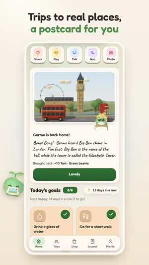
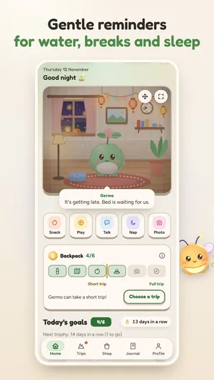
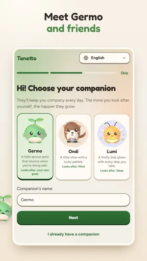
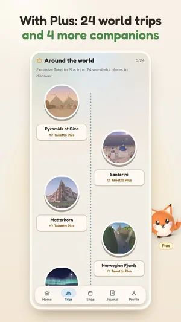
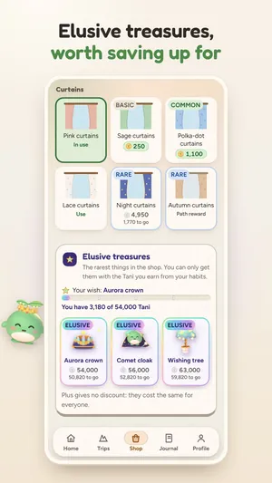

Press kit
Tanetto, the habit tracker with a little friend
Everything you need to write about Tanetto: the facts, ready-to-use descriptions and images you are welcome to use.

Fact sheet
All dates are DD/MM/YYYY.
- What it is
- A cozy self-care habit app with a little 3D companion, for Android. Habit tracker and virtual pet in one.
- In one line
- Take care of yourself one tiny step at a time, and watch a little friend grow with you.
- Developer
- Snugbloom Studio, a one-person studio in Italy.
- Platform
- Android 7.0 and later, on Google Play. A version that runs in the browser is on the website.
- On Google Play since
- 10/11/2026 (version 1.0.8).
- Current version
- 1.0.11: a home-screen widget in two sizes with your companion in 3D, the room that changes and plays its own music for seasonal events, a weekly postcard to share (only the 7 days and the season: no goals, mood or journal), an icon of your choice next to your name, a new app icon, four new Latin American destinations in Spanish and a gentler voice in all 14 languages.
- Price
- Free to download. Optional Tanetto Plus subscription, monthly or yearly (in Italy €4.99 a month or €44.99 a year; Google Play shows the price in each country's currency), and optional packs of Tanì, the in-app coins. No paid random boxes.
- Ads
- Only reward videos that the user chooses to watch, up to 5 a day; nothing plays on its own. No ads with Plus. Anyone who enters an age under 13 gets no ads at all. For minors, and for anyone who prefers not to give their age, the videos are never personalised.
- Languages (14)
- English, Italian, German, Spanish, French, Portuguese (Brazil), Japanese, Korean, Simplified Chinese, Traditional Chinese, Russian, Polish, Dutch, Turkish.
- Who it's for
- People aged 13 and up; Tanetto is not directed to children under 13. The app asks once for month and year of birth: the age is declared by the user and checked only on the phone. Anyone who enters a younger age, or prefers not to give their age, gets a protected mode: no statistics, no Tanetto account or online backup, no sharing outside the app and no offers or nudges to buy, not even the free trial (and, under 13, no ads).
- Account
- Not needed. An optional account (Google or email) backs up progress for free. Accounts are only for people old enough to agree to it under the privacy law of their country (13 to 16, depending on the country).
- Companions
- Germo the sprout, Ondi the otter and Lumi the firefly are included for everyone. Miko the kitten, Rufi the fox, Pingo the penguin and Dori the little dragon come with Plus.
- How it works
- Pick 3 to 8 tiny goals a day (a glass of water, a short walk, a few pages, an early night) and tick each one with a tap. Every goal packs something into the companion's backpack; a full backpack means a trip to a real place, half a backpack a short trip nearby, and every trip ends with a postcard for the album.
- Also inside
- A cozy room to decorate, outfits, a mood journal with a question of the day, guided breathing, letters to your future self, mini-games, a home-screen widget and a weekly summary picture to share.
- Kind by design
- The companion is never sad or sick. One goal keeps the streak, a weekly rest day counts, streak shields cover busy days, and coming back after a break brings a warm welcome and a small gift.
- Seasons and events
- Each season has its own path, a weekly challenge and a festival week: the Season of Lanterns until 31/12/2026, the Season of Stars from 01/01/2027 and the Kite Season from 01/03/2027. Christmas runs from 08/12 to 06/01.
- Accessibility
- Larger text and a Fewer animations setting.
- Safety
- Tanetto is a wellbeing and habit app, not a medical service, and does not replace professional help. The journal (and the chat, with Plus) shows helplines for the user's country, one tap away.
- Privacy
- Goals, journal and companion are saved on the phone; a copy goes to a backup only if the user creates the optional account or has Android backup turned on.
- Press contact
- tanettoapp@gmail.com. Tanetto Plus codes for reviews are available on request.
Short description
Tanetto is a cozy self-care habit app for Android. Pick a few tiny goals a day, tick them off, and a little 3D companion grows, decorates its room and travels to real places, sending you postcards. Rest days are fine. No guilt.
Long description
Tanetto turns small acts of self-care into a little adventure. Each day you pick 3 to 8 tiny goals, like drinking a glass of water, stepping outside for five minutes or going to bed a bit earlier. Every goal you tick packs something into your companion's backpack. With a full backpack it sets off for somewhere real, like London or the Grand Canyon, and sends you a postcard for your album.
The app is built around one rule: never make people feel bad. The companion is never sad or sick, rest days count, streak shields cover the busy days, and coming back after a break gets you a warm welcome.
Tanetto is free to download, in 14 languages. The only ads are reward videos you choose to watch, and the optional Plus subscription adds four more companions, a chat with your companion and 24 trips around the world.
The story
Tanetto is made by one person in Italy. It started as a web app in October 2026, went through a closed test on Google Play, and some of its kindest rules came from the testers: shorter trips for busy days, a Skip button in the first steps and fewer goals to choose from at the start.
Images
You're welcome to use these images to write about Tanetto. Please don't edit the characters.
Brand

App icon: Germo the sprout (PNG, square)
1024 × 1024 · 1.026 KBDownload: App icon: Germo the sprout (PNG, square)
Feature graphic with the Tanetto wordmark: all seven companions
1024 × 500 · 161 KBDownload: Feature graphic with the Tanetto wordmark: all seven companions
Feature graphic without text
1024 × 500 · 163 KBDownload: Feature graphic without text


Screenshots (English, version 1.0.11)

Tiny goals, a happy little friend
1080 × 1920 · 222 KBDownload: Tiny goals, a happy little friend
Watch your friend grow and celebrate each level
1080 × 1920 · 172 KBDownload: Watch your friend grow and celebrate each level
Decorate a cosy room, one little thing at a time
1080 × 1920 · 223 KBDownload: Decorate a cosy room, one little thing at a time
Trips to real places, a postcard for you
1080 × 1920 · 223 KBDownload: Trips to real places, a postcard for you
Gentle reminders for water, breaks and sleep
1080 × 1920 · 223 KBDownload: Gentle reminders for water, breaks and sleep
Meet Germo and friends
1080 × 1920 · 170 KBDownload: Meet Germo and friends
With Plus: 24 world trips and 4 more companions
1080 × 1920 · 206 KBDownload: With Plus: 24 world trips and 4 more companions
Elusive treasures, worth saving up for
1080 × 1920 · 234 KBDownload: Elusive treasures, worth saving up for


Companions

Germo the sprout, included for everyone (transparent PNG)
512 × 512 · 150 KBDownload: Germo the sprout, included for everyone (transparent PNG)
Ondi the otter, included for everyone (transparent PNG)
512 × 512 · 143 KBDownload: Ondi the otter, included for everyone (transparent PNG)
Lumi the firefly, included for everyone (transparent PNG)
512 × 512 · 144 KBDownload: Lumi the firefly, included for everyone (transparent PNG)
Miko the kitten, a Tanetto Plus companion (transparent PNG)
512 × 512 · 151 KBDownload: Miko the kitten, a Tanetto Plus companion (transparent PNG)
Rufi the fox, a Tanetto Plus companion (transparent PNG)
512 × 512 · 147 KBDownload: Rufi the fox, a Tanetto Plus companion (transparent PNG)
Pingo the penguin, a Tanetto Plus companion (transparent PNG)
512 × 512 · 137 KBDownload: Pingo the penguin, a Tanetto Plus companion (transparent PNG)
Dori the little dragon, a Tanetto Plus companion (transparent PNG)
512 × 512 · 138 KBDownload: Dori the little dragon, a Tanetto Plus companion (transparent PNG)


Moments

Germo packs a suitcase for a trip (transparent PNG)
512 × 512 · 114 KBDownload: Germo packs a suitcase for a trip (transparent PNG)
Germo with a postcard for the album (transparent PNG)
512 × 512 · 124 KBDownload: Germo with a postcard for the album (transparent PNG)
Germo with the daily gift (transparent PNG)
512 × 512 · 136 KBDownload: Germo with the daily gift (transparent PNG)
Germo reading: the journal (transparent PNG)
512 × 512 · 127 KBDownload: Germo reading: the journal (transparent PNG)


Postcards

Postcard from London, one of the real places the companions travel to
1200 × 800 · 83 KBDownload: Postcard from London, one of the real places the companions travel to
Postcard from New York, one of the real places the companions travel to
1200 × 800 · 82 KBDownload: Postcard from New York, one of the real places the companions travel to
Postcard from the Scottish Highlands
1200 × 800 · 73 KBDownload: Postcard from the Scottish Highlands
Postcard from the Grand Canyon
1200 × 800 · 74 KBDownload: Postcard from the Grand Canyon
Postcard from Santorini, from one of the 24 Tanetto Plus trips around the world
1200 × 800 · 77 KBDownload: Postcard from Santorini, from one of the 24 Tanetto Plus trips around the world
Postcard from Machu Picchu, from one of the 24 Tanetto Plus trips around the world
1200 × 800 · 101 KBDownload: Postcard from Machu Picchu, from one of the 24 Tanetto Plus trips around the world


Seasons

Season of Lanterns: Germo and Lumi
1200 × 600 · 73 KBDownload: Season of Lanterns: Germo and Lumi

Contact
Press: tanettoapp@gmail.com. Tanetto Plus codes for reviews are available on request.
Snugbloom Studio, a one-person studio in Italy.